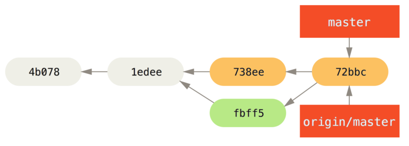
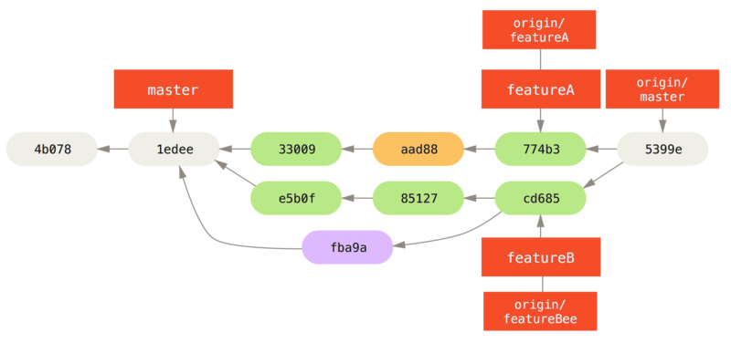

向一个项目贡献
描述如何向一个项目贡献的主要困难在于完成贡献有很多不同的方式。 因为 Git 非常灵活，人们可以通过不同的方式来一起工作，所以描述应该如何贡献并不是非常准确 - 每一个项目都有一点儿不同。 影响因素包括活跃贡献者的数量、选择的工作流程、提交权限与可能包含的外部贡献方法。
第一个影响因素是活跃贡献者的数量 - 积极地向这个项目贡献代码的用户数量以及他们的贡献频率。 在许多情况下，你可能会有两三个开发者一天提交几次，对于不活跃的项目可能更少。 对于大一些的公司或项目，开发者的数量可能会是上千，每天都有成百上千次提交。 这很重要，因为随着开发者越来越多，在确保你的代码能干净地应用或轻松地合并时会遇到更多问题。 提交的改动可能表现为过时的，也可能在你正在做改动或者等待改动被批准应用时被合并入的工作严重损坏。 如何保证代码始终是最新的，并且提交始终是有效的？
下一个影响因素是项目使用的工作流程。 它是中心化的吗，即每一个开发者都对主线代码有相同的写入权限？ 项目是否有一个检查所有补丁的维护者或整合者？ 是否所有的补丁是同行评审后批准的？ 你是否参与了那个过程？ 是否存在副官系统，你必须先将你的工作提交到上面？
下一个问题是提交权限。 是否有项目的写权限会使向项目贡献所需的流程有极大的不同。 如果没有写权限，项目会选择何种方式接受贡献的工作？ 是否甚至有一个如何贡献的规范？ 你一次贡献多少工作？ 你多久贡献一次？
所有这些问题都会影响实际如何向一个项目贡献，以及对你来说哪些工作流程更适合或者可用。 我们将会由浅入深，通过一系列用例来讲述其中的每一个方面；从这些例子应该能够建立实际中你需要的特定工作流程。
提交准则
在我们开始查看特定的用例前，这里有一个关于提交信息的快速说明。
有一个好的创建提交的准则并且坚持使用会让与 Git 工作和与其他人协作更容易。
Git 项目提供了一个文档，其中列举了关于创建提交到提交补丁的若干好的提示 - 可以在 Git 源代码中的 Documentation/SubmittingPatches 文件中阅读它。
首先，你不会想要把空白错误（根据 git help diff 的描述，结合下面给出的图片，空白错误是指行尾的空格、Tab 制表符，和行首空格后跟 Tab 制表符的行为）提交上去。
Git 提供了一个简单的方式来检查这点 - 在提交前，运行 git diff --check，它将会找到可能的空白错误并将它们为你列出来。
Figure 1.
git diff --check 的输出如果在提交前运行那个命令，可以知道提交中是否包含可能会使其他开发者恼怒的空白问题。
接下来，尝试让每一个提交成为一个逻辑上的独立变更集。
如果可以，尝试让改动可以理解 - 不要在整个周末编码解决五个问题，然后在周一时将它们提交为一个巨大的提交。
即使在周末期间你无法提交，在周一时使用暂存区域将你的工作最少拆分为每个问题一个提交，并且为每一个提交附带一个有用的信息。
如果其中一些改动修改了同一个文件，尝试使用 git add --patch 来部分暂存文件（在 [_interactive_staging] 中有详细介绍）。
不管你做一个或五个提交，只要所有的改动是在同一时刻添加的，项目分支末端的快照就是独立的，使同事开发者必须审查你的改动时尽量让事情容易些。
当你之后需要时这个方法也会使拉出或还原一个变更集更容易些。
[_rewriting_history] 描述了重写历史与交互式暂存文件的若干有用的 Git 技巧 - 在将工作发送给其他人前使用这些工具来帮助生成一个干净又易懂的历史。
最后一件要牢记的事是提交信息。
有一个创建优质提交信息的习惯会使 Git 的使用与协作容易的多。
一般情况下，信息应当以少于 50 个字符（25个汉字）的单行开始且简要地描述变更，接着是一个空白行，再接着是一个更详细的解释。
Git 项目要求一个更详细的解释，包括做改动的动机和它的实现与之前行为的对比 - 这是一个值得遵循的好规则。
在这些信息中使用现在时态祈使语气也是一个好想法。
换句话说，使用命令。
使用 Add tests for.'' 而不是 I added tests for'' 或 ``Adding tests for,''。
这里是一份最初由 Tim Pope 写的模板：
修改的摘要（50 个字符或更少）
如果必要的话，加入更详细的解释文字。在
大概 72 个字符的时候换行。在某些情形下，
第一行被当作一封电子邮件的标题，剩下的
文本作为正文。分隔摘要与正文的空行是
必须的（除非你完全省略正文）；如果你将
两者混在一起，那么类似变基等工具无法
正常工作。
空行接着更进一步的段落。
- 句号也是可以的。
- 项目符号可以使用典型的连字符或星号
前面一个空格，之间用空行隔开，
但是可以依据不同的惯例有所不同。如果你所有的提交信息看起来都像这样，对你与跟你工作在一起的其他开发者来说事情会变得非常容易。
Git 项目有一个良好格式化的提交信息 - 尝试在那儿运行 git log --no-merges 来看看漂亮的格式化的项目提交历史像什么样。
在接下来的例子中，以及贯穿本书大部分，出于简洁性的原因本书不会有像这样漂亮格式的信息；相反，我们使用 -m 选项的 git commit。
照我们说的做，而不是照我们做的做。
私有小型团队
你可能会遇到的最简单的配置是有一两个其他开发者的私有项目。 ``私有'' 在这个上下文中，意味着闭源 - 不可以从外面的世界中访问到。 你和其他的开发者都有仓库的推送权限。
在这个环境下，可以采用一个类似使用 Subversion 或其他集中式的系统时会使用的工作流程。
依然可以得到像离线提交、非常容易地新建分支与合并分支等高级功能，但是工作流程可以是很简单的；主要的区别是合并发生在客户端这边而不是在提交时发生在服务器那边。
让我们看看当两个开发者在一个共享仓库中一起工作时会是什么样子。
第一个开发者，John，克隆了仓库，做了改动，然后本地提交。
（为了缩短这些例子长度，协议信息已被替换为 …。）
# John's Machine
$ git clone john@githost:simplegit.git
Initialized empty Git repository in /home/john/simplegit/.git/
...
$ cd simplegit/
$ vim lib/simplegit.rb
$ git commit -am 'removed invalid default value'
[master 738ee87] removed invalid default value
1 files changed, 1 insertions(+), 1 deletions(-)第二个开发者，Jessica，做了同样的事情 - 克隆仓库并提交了一个改动：
# Jessica's Machine
$ git clone jessica@githost:simplegit.git
Initialized empty Git repository in /home/jessica/simplegit/.git/
...
$ cd simplegit/
$ vim TODO
$ git commit -am 'add reset task'
[master fbff5bc] add reset task
1 files changed, 1 insertions(+), 0 deletions(-)现在，Jessica 把她的工作推送到服务器上：
# Jessica's Machine
$ git push origin master
...
To jessica@githost:simplegit.git
1edee6b..fbff5bc master -> masterJohn 也尝试推送他的改动：
# John's Machine
$ git push origin master
To john@githost:simplegit.git
! [rejected] master -> master (non-fast forward)
error: failed to push some refs to 'john@githost:simplegit.git'不允许 John 推送是因为在同一时间 Jessica 已经推送了。 如果之前习惯于用 Subversion 那么理解这点特别重要，因为你会注意到两个开发者并没有编辑同一个文件。 尽管 Subversion 会对编辑的不同文件在服务器上自动进行一次合并，但 Git 要求你在本地合并提交。 John 必须抓取 Jessica 的改动并合并它们，才能被允许推送。
$ git fetch origin
...
From john@githost:simplegit
+ 049d078...fbff5bc master -> origin/master在这个时候，John 的本地仓库看起来像这样：

Figure 2. John 的分叉历史
John 有一个引用指向 Jessica 推送上去的改动，但是他必须将它们合并入自己的工作中之后才能被允许推送。
$ git merge origin/master
Merge made by recursive.
TODO | 1 +
1 files changed, 1 insertions(+), 0 deletions(-)合并进行地很顺利 - John 的提交历史现在看起来像这样：

Figure 3. 合并了
origin/master 之后 John 的仓库现在，John 可以测试代码，确保它依然正常工作，然后他可以把合并的新工作推送到服务器上：
$ git push origin master
...
To john@githost:simplegit.git
fbff5bc..72bbc59 master -> master最终，John 的提交历史看起来像这样：

Figure 4. 推送到
origin 服务器后 John 的历史在此期间，Jessica 在一个特性分支上工作。
她创建了一个称作 issue54 的特性分支并且在那个分支上做了三次提交。
她还没有抓取 John 的改动，所以她的提交历史看起来像这样：

Figure 5. Jessica 的特性分支
Jessica 想要与 John 同步，所以她进行了抓取操作：
# Jessica's Machine
$ git fetch origin
...
From jessica@githost:simplegit
fbff5bc..72bbc59 master -> origin/master那会同时拉取 John 推送的工作。 Jessica 的历史现在看起来像这样：

Figure 6. 抓取 John 的改动后 Jessica 的历史
Jessica 认为她的特性分支已经准备好了，但是她想要知道必须合并什么进入她的工作才能推送。
她运行 git log 来找出：
$ git log --no-merges issue54..origin/master
commit 738ee872852dfaa9d6634e0dea7a324040193016
Author: John Smith <jsmith@example.com>
Date: Fri May 29 16:01:27 2009 -0700
removed invalid default valueissue54..origin/master 语法是一个日志过滤器，要求 Git 只显示所有在后面分支（在本例中是 origin/master）但不在前面分支（在本例中是 issue54）的提交的列表。
我们将会在 [_commit_ranges] 中详细介绍这个语法。
目前，我们可以从输出中看到有一个 John 生成的但是 Jessica 还没有合并入的提交。
如果她合并 origin/master，也就是说将会修改她的本地工作的那个单个提交。
现在，Jessica 可以合并她的特性工作到她的 master 分支，合并 John 的工作（origin/master）进入她的 master 分支，然后再次推送回服务器。
首先，为了整合所有这些工作她切换回她的 master 分支。
$ git checkout master
Switched to branch 'master'
Your branch is behind 'origin/master' by 2 commits, and can be fast-forwarded.她既可以先合并 origin/master 也可以先合并 issue54 - 它们都是上游，所以顺序并没有关系。
不论她选择的顺序是什么最终的结果快照是完全一样的；只是历史会有一点轻微的区别。
她选择先合并入 issue54：
$ git merge issue54
Updating fbff5bc..4af4298
Fast forward
README | 1 +
lib/simplegit.rb | 6 +++++-
2 files changed, 6 insertions(+), 1 deletions(-)没有发生问题；如你所见它是一次简单的快进。
现在 Jessica 合并入 John 的工作（origin/master）：
$ git merge origin/master
Auto-merging lib/simplegit.rb
Merge made by recursive.
lib/simplegit.rb | 2 +-
1 files changed, 1 insertions(+), 1 deletions(-)每一个文件都干净地合并了，Jessica 的历史看起来像这样：

Figure 7. 合并了 John 的改动后 Jessica 的历史
现在 origin/master 是可以从 Jessica 的 master 分支到达的，所以她应该可以成功地推送（假设同一时间 John 并没有再次推送）：
$ git push origin master
...
To jessica@githost:simplegit.git
72bbc59..8059c15 master -> master每一个开发者都提交了几次并成功地合并了其他人的工作。
Figure 8. 推送所有的改动回服务器后 Jessica 的历史
这是一个最简单的工作流程。
你通常在一个特性分支工作一会儿，当它准备好整合时合并回你的 master 分支。
当想要共享工作时，将其合并回你自己的 master 分支，如果有改动的话然后抓取并合并 origin/master，最终推送到服务器上的 master 分支。
通常顺序像这样：

Figure 9. 一个简单的多人 Git 工作流程的通常事件顺序
私有管理团队
在接下来的情形中，你会看到大型私有团队中贡献者的角色。 在你将学习到的这种工作环境中，小组基于特性进行协作，这些团队的贡献将会由其他人整合。
让我们假设 John 与 Jessica 在一个特性上工作，同时 Jessica 与 Josie 在第二个特性上工作。
在本例中，公司使用了一种整合-管理者工作流程，独立小组的工作只能被特定的工程师整合，主仓库的 master 分支只能被那些工程师更新。
在这种情况下，所有的工作都是在基于团队的分支上完成的并且稍后会被整合者拉到一起。
因为 Jessica 在两个特性上工作，并且平行地与两个不同的开发者协作，让我们跟随她的工作流程。
假设她已经克隆了仓库，首先决定在 featureA 上工作。
她为那个特性创建了一个新分支然后在那做了一些工作：
# Jessica's Machine
$ git checkout -b featureA
Switched to a new branch 'featureA'
$ vim lib/simplegit.rb
$ git commit -am 'add limit to log function'
[featureA 3300904] add limit to log function
1 files changed, 1 insertions(+), 1 deletions(-)在这个时候，她需要将工作共享给 John，所以她推送了 featureA 分支的提交到服务器上。
Jessica 没有 master 分支的推送权限 - 只有整合者有 - 所以为了与 John 协作必须推送另一个分支。
$ git push -u origin featureA
...
To jessica@githost:simplegit.git
* [new branch] featureA -> featureAJessica 向 John 发邮件告诉他已经推送了一些工作到 featureA 分支现在可以看一看。
当她等待 John 的反馈时，Jessica 决定与 Josie 开始在 featureB 上工作。
为了开始工作，她基于服务器的 master 分支开始了一个新分支。
# Jessica's Machine
$ git fetch origin
$ git checkout -b featureB origin/master
Switched to a new branch 'featureB'现在，Jessica 在 featureB 分支上创建了几次提交：
$ vim lib/simplegit.rb
$ git commit -am 'made the ls-tree function recursive'
[featureB e5b0fdc] made the ls-tree function recursive
1 files changed, 1 insertions(+), 1 deletions(-)
$ vim lib/simplegit.rb
$ git commit -am 'add ls-files'
[featureB 8512791] add ls-files
1 files changed, 5 insertions(+), 0 deletions(-)Jessica 的仓库看起来像这样：

Figure 10. Jessica 的初始提交历史
她准备好推送工作了，但是一封来自 Josie 的邮件告知一些初始工作已经被推送到服务器上的 featureBee 上了。
Jessica 在能推送到服务器前首先需要将那些改动与她自己的合并。
然后她可以通过 git fetch 抓取 Josie 的改动：
$ git fetch origin
...
From jessica@githost:simplegit
* [new branch] featureBee -> origin/featureBeeJessica 现在可以通过 git merge 将其合并到她做的工作中：
$ git merge origin/featureBee
Auto-merging lib/simplegit.rb
Merge made by recursive.
lib/simplegit.rb | 4 ++++
1 files changed, 4 insertions(+), 0 deletions(-)有点儿问题 - 她需要将在 featureB 分支上合并的工作推送到服务器上的 featureBee 分支。
她可以通过指定本地分支加上冒号（:）加上远程分支给 git push 命令来这样做：
$ git push -u origin featureB:featureBee
...
To jessica@githost:simplegit.git
fba9af8..cd685d1 featureB -> featureBee这称作一个 引用规格。
查看 [_refspec] 了解关于 Git 引用规格与通过它们可以做的不同的事情的详细讨论。
也要注意 -u 标记；这是 --set-upstream 的简写，该标记会为之后轻松地推送与拉取配置分支。
紧接着，John 发邮件给 Jessica 说他已经推送了一些改动到 featureA 分支并要求她去验证它们。
她运行一个 git fetch 来拉取下那些改动：
$ git fetch origin
...
From jessica@githost:simplegit
3300904..aad881d featureA -> origin/featureA然后，通过 git log 她可以看到哪些发生了改变：
$ git log featureA..origin/featureA
commit aad881d154acdaeb2b6b18ea0e827ed8a6d671e6
Author: John Smith <jsmith@example.com>
Date: Fri May 29 19:57:33 2009 -0700
changed log output to 30 from 25最终，她合并 John 的工作到她自己的 featureA 分支：
$ git checkout featureA
Switched to branch 'featureA'
$ git merge origin/featureA
Updating 3300904..aad881d
Fast forward
lib/simplegit.rb | 10 +++++++++-
1 files changed, 9 insertions(+), 1 deletions(-)Jessica 想要轻微调整一些东西，所以她再次提交然后将其推送回服务器：
$ git commit -am 'small tweak'
[featureA 774b3ed] small tweak
1 files changed, 1 insertions(+), 1 deletions(-)
$ git push
...
To jessica@githost:simplegit.git
3300904..774b3ed featureA -> featureAJessica 的提交历史现在看起来像这样：

Figure 11. 在一个特性分支提交后 Jessica 的历史
Jessica、Josie 与 John 通知整合者在服务器上的 featureA 与 featureBee 分支准备好整合到主线中了。
在整合者合并这些分支到主线后，一次抓取会拿下来一个新的合并提交，使历史看起来像这样：

Figure 12. 合并了 Jessica 的两个特性分支后她的历史
许多团队切换到 Git 是因为这一允许多个团队并行工作、并在之后合并不同工作的能力。 团队中更小一些的子小组可以通过远程分支协作而不必影响或妨碍整个团队的能力是 Git 的一个巨大优势。 在这儿看到的工作流程顺序类似这样：
Figure 13. 这种管理团队工作流程的基本顺序
派生的公开项目
向公开项目做贡献有一点儿不同。 因为没有权限直接更新项目的分支，你必须用其他办法将工作给维护者。 第一个例子描述在支持简单派生的 Git 托管上使用派生来做贡献。 许多托管站点支持这个功能（包括 GitHub、BitBucket、Google Code、repo.or.cz 等等），许多项目维护者期望这种风格的贡献。 下一节会讨论偏好通过邮件接受贡献补丁的项目。
首先，你可能想要克隆主仓库，为计划贡献的补丁或补丁序列创建一个特性分支，然后在那儿做工作。 顺序看起来基本像这样：
$ git clone (url)
$ cd project
$ git checkout -b featureA
# (work)
$ git commit
# (work)
$ git commit|
Note
|
你可能会想要使用 |
当你的分支工作完成后准备将其贡献回维护者，去原始项目中然后点击 `Fork'' 按钮，创建一份自己的可写的项目派生仓库。
然后需要添加这个新仓库 URL 为第二个远程仓库，在本例中称作 `myfork：
$ git remote add myfork (url)然后需要推送工作到上面。 相对于合并到主分支再推送上去，推送你正在工作的特性分支到仓库上更简单。 原因是工作如果不被接受或者是被拣选的，就不必回退你的 master 分支。 如果维护者合并、变基或拣选你的工作，不管怎样你最终会通过拉取他们的仓库找回来你的工作。
$ git push -u myfork featureA
当工作已经被推送到你的派生后，你需要通知维护者。
这通常被称作一个拉取请求（pull request），你既可以通过网站生成它 - GitHub 有它自己的 Pull Request 机制，我们将会在 [_github] 介绍 - 也可以运行 git request-pull 命令然后手动地将输出发送电子邮件给项目的维护者。
request-pull 命令接受特性分支拉入的基础分支，以及它们拉入的 Git 仓库 URL，输出请求拉入的所有修改的总结。
例如，Jessica 想要发送给 John 一个拉取请求，她已经在刚刚推送的分支上做了两次提交。她可以运行这个：
$ git request-pull origin/master myfork
The following changes since commit 1edee6b1d61823a2de3b09c160d7080b8d1b3a40:
John Smith (1):
added a new function
are available in the git repository at:
git://githost/simplegit.git featureA
Jessica Smith (2):
add limit to log function
change log output to 30 from 25
lib/simplegit.rb | 10 +++++++++-
1 files changed, 9 insertions(+), 1 deletions(-)这个输出可以被发送给维护者 - 它告诉他们工作是从哪个分支开始、归纳的提交与从哪里拉入这些工作。
在一个你不是维护者的项目上，通常有一个总是跟踪 origin/master 的 master 分支会很方便，在特性分支上做工作是因为如果它们被拒绝时你可以轻松地丢弃。
如果同一时间主仓库移动了然后你的提交不再能干净地应用，那么使工作主题独立于特性分支也会使你变基（rebase）工作时更容易。
例如，你想要提供第二个特性工作到项目，不要继续在刚刚推送的特性分支上工作 - 从主仓库的 master 分支重新开始：
$ git checkout -b featureB origin/master
# (work)
$ git commit
$ git push myfork featureB
# (email maintainer)
$ git fetch origin现在，每一个特性都保存在一个贮藏库中 - 类似于补丁队列 - 可以重写、变基与修改而不会让特性互相干涉或互相依赖，像这样：

Figure 14.
featureB 的初始提交历史假设项目维护者已经拉取了一串其他补丁，然后尝试拉取你的第一个分支，但是没有干净地合并。
在这种情况下，可以尝试变基那个分支到 origin/master 的顶部，为维护者解决冲突，然后重新提交你的改动：
$ git checkout featureA
$ git rebase origin/master
$ git push -f myfork featureA这样会重写你的历史，现在看起来像是 featureA 工作之后的提交历史
Figure 15.
featureA 工作之后的提交历史因为你将分支变基了，所以必须为推送命令指定 -f 选项，这样才能将服务器上有一个不是它的后代的提交的 featureA 分支替换掉。
一个替代的选项是推送这个新工作到服务器上的一个不同分支（可能称作 featureAv2）。
让我们看一个更有可能的情况：维护者看到了你的第二个分支上的工作并且很喜欢其中的概念，但是想要你修改一下实现的细节。
你也可以利用这次机会将工作基于项目现在的 master 分支。
你从现在的 origin/master 分支开始一个新分支，在那儿压缩 featureB 的改动，解决任何冲突，改变实现，然后推送它为一个新分支。
$ git checkout -b featureBv2 origin/master
$ git merge --no-commit --squash featureB
# (change implementation)
$ git commit
$ git push myfork featureBv2--squash 选项接受被合并的分支上的所有工作，并将其压缩至一个变更集，使仓库变成一个真正的合并发生的状态，而不会真的生成一个合并提交。
这意味着你的未来的提交将会只有一个父提交，并允许你引入另一个分支的所有改动，然后在记录一个新提交前做更多的改动。
同样 --no-commit 选项在默认合并过程中可以用来延迟生成合并提交。
现在你可以给维护者发送一条消息，表示你已经做了要求的修改然后他们可以在你的 featureBv2 分支上找到那些改动。

Figure 16.
featureBv2 工作之后的提交历史通过邮件的公开项目
许多项目建立了接受补丁的流程 - 需要检查每一个项目的特定规则，因为它们之间有区别。 因为有几个历史悠久的、大型的项目会通过一个开发者的邮件列表接受补丁，现在我们将会通过一个例子来演示。
工作流程与之前的用例是类似的 - 你为工作的每一个补丁序列创建特性分支。 区别是如何提交它们到项目中。 生成每一个提交序列的电子邮件版本然后邮寄它们到开发者邮件列表，而不是派生项目然后推送到你自己的可写版本。
$ git checkout -b topicA
# (work)
$ git commit
# (work)
$ git commit
现在有两个提交要发送到邮件列表。
使用 git format-patch 来生成可以邮寄到列表的 mbox 格式的文件 - 它将每一个提交转换为一封电子邮件，提交信息的第一行作为主题，剩余信息与提交引入的补丁作为正文。
它有一个好处是是使用 format-patch 生成的一封电子邮件应用的提交正确地保留了所有的提交信息。
$ git format-patch -M origin/master
0001-add-limit-to-log-function.patch
0002-changed-log-output-to-30-from-25.patchformat-patch 命令打印出它创建的补丁文件名字。
-M 开关告诉 Git 查找重命名。
文件最后看起来像这样：
$ cat 0001-add-limit-to-log-function.patch
From 330090432754092d704da8e76ca5c05c198e71a8 Mon Sep 17 00:00:00 2001
From: Jessica Smith <jessica@example.com>
Date: Sun, 6 Apr 2008 10:17:23 -0700
Subject: [PATCH 1/2] add limit to log function
Limit log functionality to the first 20
---
lib/simplegit.rb | 2 +-
1 files changed, 1 insertions(+), 1 deletions(-)
diff --git a/lib/simplegit.rb b/lib/simplegit.rb
index 76f47bc..f9815f1 100644
--- a/lib/simplegit.rb
+++ b/lib/simplegit.rb
@@ -14,7 +14,7 @@ class SimpleGit
end
def log(treeish = 'master')
- command("git log #{treeish}")
+ command("git log -n 20 #{treeish}")
end
def ls_tree(treeish = 'master')
--
2.1.0也可以编辑这些补丁文件为邮件列表添加更多不想要在提交信息中显示出来的信息。
如果在 --- 行与补丁开头（diff --git 行）之间添加文本，那么开发者就可以阅读它；但是应用补丁时会排除它。
为了将其邮寄到邮件列表，你既可以将文件粘贴进电子邮件客户端，也可以通过命令行程序发送它。
粘贴文本经常会发生格式化问题，特别是那些不会合适地保留换行符与其他空白的 `更聪明的'' 客户端。
幸运的是，Git 提供了一个工具帮助你通过 IMAP 发送正确格式化的补丁，这可能对你更容易些。
我们将会演示如何通过 Gmail 发送一个补丁，它正好是我们所知最好的邮件代理；可以在之前提到的 Git 源代码中的 `Documentation/SubmittingPatches 文件的最下面了解一系列邮件程序的详细指令。
首先，需要在 ~/.gitconfig 文件中设置 imap 区块。
可以通过一系列的 git config 命令来分别设置每一个值，或者手动添加它们，不管怎样最后配置文件应该看起来像这样：
[imap]
folder = "[Gmail]/Drafts"
host = imaps://imap.gmail.com
user = user@gmail.com
pass = p4ssw0rd
port = 993
sslverify = false如果 IMAP 服务器不使用 SSL，最后两行可能没有必要，host 的值会是 imap:// 而不是 imaps://。
当那些设置完成后，可以使用 git imap-send 将补丁序列放在特定 IMAP 服务器的 Drafts 文件夹中：
$ cat *.patch |git imap-send
Resolving imap.gmail.com... ok
Connecting to [74.125.142.109]:993... ok
Logging in...
sending 2 messages
100% (2/2) done在这个时候，你应该能够到 Drafts 文件夹中，修改收件人字段为想要发送补丁的邮件列表，可能需要抄送给维护者或负责那个部分的人，然后发送。
你也可以通过一个 SMTP 服务器发送补丁。
同之前一样，你可以通过一系列的 git config 命令来分别设置选项，或者你可以手动地将它们添加到你的 ~/.gitconfig 文件的 sendmail 区块：
[sendemail]
smtpencryption = tls
smtpserver = smtp.gmail.com
smtpuser = user@gmail.com
smtpserverport = 587当这完成后，你可以使用 git send-email 发送你的补丁：
$ git send-email *.patch
0001-added-limit-to-log-function.patch
0002-changed-log-output-to-30-from-25.patch
Who should the emails appear to be from? [Jessica Smith <jessica@example.com>]
Emails will be sent from: Jessica Smith <jessica@example.com>
Who should the emails be sent to? jessica@example.com
Message-ID to be used as In-Reply-To for the first email? y然后，对于正在发送的每一个补丁，Git 会吐出这样的一串日志信息：
(mbox) Adding cc: Jessica Smith <jessica@example.com> from
\line 'From: Jessica Smith <jessica@example.com>'
OK. Log says:
Sendmail: /usr/sbin/sendmail -i jessica@example.com
From: Jessica Smith <jessica@example.com>
To: jessica@example.com
Subject: [PATCH 1/2] added limit to log function
Date: Sat, 30 May 2009 13:29:15 -0700
Message-Id: <1243715356-61726-1-git-send-email-jessica@example.com>
X-Mailer: git-send-email 1.6.2.rc1.20.g8c5b.dirty
In-Reply-To: <y>
References: <y>
Result: OK总结
这个部分介绍了处理可能会遇到的几个迥然不同类型的 Git 项目的一些常见的工作流程，介绍了帮助管理这个过程的一些新工具。 接下来，你会了解到如何在贡献的另一面工作：维护一个 Git 项目。 你将会学习如何成为一个仁慈的独裁者或整合管理者。